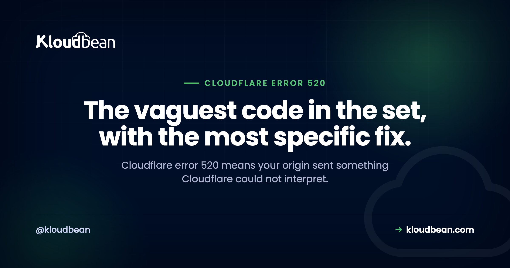

Error 520: Web Server Returned an Unknown Error (How to Find the Real Cause)

Of all the Cloudflare error codes, 520 is the one that tells you least. It is effectively the fallback: Cloudflare received something from your origin server and could not make a valid HTTP response out of it. Not a refused connection, not a timeout, not a TLS failure, because each of those has its own code. Something came back and it was unusable. Which sounds hopeless to debug, and actually is not, because there are only a handful of ways a web server produces an unusable response.
Your origin returned a response Cloudflare could not parse: an empty reply, headers that are too large, a connection dropped part-way through, or malformed output. The fastest route to the cause is your origin's error log at the moment of failure, matched to the Cloudflare Ray ID shown on the error page. The most commonly missed cause is oversized response headers, usually from cookies that have quietly grown too large.
Why Cloudflare settings are the wrong place to look
Every other code in the 52x family describes something about the connection. 520 describes the content of a response that arrived. That difference should change where you look. There is no firewall rule to fix and no certificate to renew, because the connection worked. Your server answered. The answer was broken.
Which means the evidence you need is in your origin logs, not in Cloudflare. So the first job is finding the exact request.
Use the Ray ID to find the actual request
Every Cloudflare error page shows a Ray ID, a unique identifier for that request. Cloudflare passes it to your origin in the CF-Ray header, which means you can log it and match a user-reported error to a specific line in your own logs. This is the difference between debugging 520 in minutes and guessing for an afternoon.
Add it to your nginx log format:
log_format cf '$remote_addr - $host [$time_local] "$request" '
'$status $body_bytes_sent rt=$request_time '
'ray=$http_cf_ray';
access_log /var/log/nginx/access.log cf;Then, when someone sends you a Ray ID, you can find the request immediately:
grep "ray=8a1b2c3d4e5f6789" /var/log/nginx/access.logIf you have not set this up yet, do it now rather than later. 520s are often intermittent, affecting a fraction of requests, and without correlation you are reading thousands of log lines hoping to spot the right one. With it, you get the URL, the status your server thought it returned, and the response time.
Cause 1: an empty response
The most frequent cause. Your application crashed part-way through handling the request and returned nothing at all. A zero-byte response is not valid HTTP, so Cloudflare reports 520.
In PHP this usually means a fatal error, an exhausted memory limit, or a segmentation fault in an extension. Check the places the output does not appear:
# PHP fatal errors and memory exhaustion
sudo grep -iE "fatal|allowed memory size" /var/log/php*-fpm.log | tail -20
# PHP-FPM worker deaths and restarts
sudo journalctl -u php8.2-fpm --since "1 hour ago" --no-pager | tail -30
# nginx upstream complaints
sudo grep -iE "upstream|recv\(\) failed|reset by peer" /var/log/nginx/error.log | tail -20The tell-tale line is Allowed memory size of X bytes exhausted. When PHP hits its memory limit mid-response, output stops dead. Raising memory_limit gets you running again, though it is worth asking what the request was doing that needed hundreds of megabytes, because usually the honest answer is that it was loading far too many rows at once.
For Node, the same shape appears when a process is killed by the out-of-memory killer or crashes without a handler. grep -i "killed process" /var/log/syslog will show the kernel reaping it.
Cause 2: response headers that are too large
This is the cause almost nobody checks, and it produces the most confusing 520 because the page works perfectly for most people and fails for a specific subset of users. Cloudflare limits the total size of response headers. Exceed it and the response is rejected even though your server considers it a clean 200.
Cookies are the usual culprit, and they grow silently. A session cookie, an auth token, a consent record, several analytics identifiers, and a marketing platform that stores a small object in a cookie. Each addition is reasonable. The total is not.
The reason it hits only some users is that cookies accumulate per browser. A first-time visitor has almost none and never sees the error. Someone who has been using the site for months, accepted every prompt, and logged in and out repeatedly carries a much bigger header. That is your bug report.
# Measure the response headers your origin actually sends
curl -sD - -o /dev/null --resolve example.com:443:203.0.113.10 https://example.com | wc -c
# See them, sorted by size, to find the offender
curl -sD - -o /dev/null https://example.com | awk '{print length($0), $0}' | sort -rn | headFixes, in order of preference. Stop putting data in cookies that belongs in server-side session storage, which is what Redis is for. Cut the number of Set-Cookie headers by consolidating what you actually need. Reduce the payload in any JWT you keep in a cookie, since claims tend to get added and never removed. And check whether a third-party script is setting something large on your behalf.
Cause 3: the connection dropped mid-response
Your server began sending a valid response and then stopped. Cloudflare has a partial response it cannot use. In the logs this shows up as a reset:
sudo grep -iE "reset by peer|premature|closed connection" /var/log/nginx/error.log | tail -20Common triggers are a PHP-FPM worker being recycled while serving, a process killed for memory, a timeout in the proxy layer that is shorter than the request needs, or a security module aborting a response it considers suspicious. If you run mod_security or similar, check whether it is terminating responses rather than requests.
Worth checking your own proxy timeouts too, since a mismatch between nginx and the application produces exactly this:
grep -rE "proxy_read_timeout|fastcgi_read_timeout" /etc/nginx/Cause 4: malformed output
Something in your application is emitting bytes before or around the HTTP response that break it. In PHP, the classic is stray output before headers are sent: whitespace after a closing tag in an included file, a stray var_dump, or a warning printed when display_errors is on in production.
The signature is a response that looks almost right but has content in the wrong place. Turn display_errors off in production and log instead, which is where those messages belong anyway. Then check the response shape directly:
curl -i --resolve example.com:443:203.0.113.10 https://example.com/the-failing-path | head -30Reading the raw response is the step people skip. If there is a PHP warning sitting above your status line, you will see it in one glance.
Cause 5: a redirect loop at the origin
If your server keeps redirecting, Cloudflare eventually gives up. The most common version of this comes from an SSL mode mismatch: Cloudflare set to Flexible, so it speaks plain HTTP to your origin, while your origin is configured to redirect all HTTP to HTTPS. Cloudflare asks over HTTP, the server says go to HTTPS, Cloudflare asks over HTTP again. Round and round.
# Follow redirects and count them
curl -sIL --max-redirs 10 https://example.com | grep -E "^HTTP|^location"The fix is to stop using Flexible mode. Put a valid certificate on your origin and use Full (strict), which is covered properly in our error 525 guide. Flexible mode is a persistent source of trouble and leaves the connection between Cloudflare and your server unencrypted, which is reason enough to avoid it.
| Symptom | Likely cause | Where to look |
|---|---|---|
| Fails for logged-in or long-term users only | Oversized headers from accumulated cookies | Measure response header size |
| Fails on one specific URL | Application crash on that path | PHP or app error log |
| Intermittent across all URLs | Worker recycling or memory pressure | FPM log, OOM killer |
| Started after a code deploy | Stray output or a fatal error | curl -i the raw response |
| Every request fails immediately | Redirect loop, often Flexible SSL mode | curl -sIL |
| Only on large or slow pages | Timeout mismatch cutting the response | nginx proxy timeouts |
A quick word on what will not help
Clearing Cloudflare's cache, toggling development mode, and changing the security level are the three things people try first with a 520, and none of them addresses any of the causes above. The connection succeeded. Cloudflare did its job and reported that your server's answer was unusable. Time spent in the Cloudflare dashboard on a 520 is nearly always time spent in the wrong place.
One genuine exception: if you are testing while Cloudflare is caching the error, development mode stops it serving a stale broken response and confusing your results. Use it as a testing aid, not a fix.
The pattern behind these causes
Four of the five are resource and configuration problems on the server: memory limits, worker recycling, timeout mismatches, and session data in the wrong place. That is the recurring theme with 520. It is rarely a bug in your business logic and usually a server that is not sized or configured for what the application does.
On Kloudbean the parts that cause this are managed rather than left to you: PHP and its limits, the FPM pool, nginx and its timeouts, and the memory headroom on the server. Managed Redis is available in the same dashboard for the session storage that should be holding data currently stuffed into cookies, and you can resize a server when the honest answer is that it needs more memory. Servers, applications, and databases in one place matters here, because a 520 caused by memory pressure is diagnosed across all three.
The honest limit: a managed platform cannot stop your code from loading fifty thousand rows into memory, and it will not remove a fatal error in your application. What it removes is the configuration mismatches and the guesswork about which limit you hit.

error 520, in more depth
For the full family and how to tell the codes apart, see Cloudflare error codes 520 to 527. Its closest neighbours: error 521 and error 525. For the upstream layer where these often surface, 502 Bad Gateway and the nginx reverse proxy setup. To move session data out of cookies, managed Redis hosting. And when a request is simply doing too much, background jobs.
Stop guessing which limit you hit.
Managed servers with PHP, FPM, and nginx configured and tuned, visible memory and load metrics, managed Redis for real session storage, and a resize when the answer is more memory. Free migration assistance included. Start at kloudbean.com.
Managed servers · Tuned PHP and nginx · Managed Redis · Server metrics · One dashboard
FAQ
What does Cloudflare error 520 mean?
It means Cloudflare connected to your origin server successfully but received a response it could not turn into valid HTTP. That covers an empty reply, oversized headers, malformed output, or a connection dropped part-way through. Because the connection itself worked, the cause is in your server's response rather than in the network path or Cloudflare's configuration.
How do I find what caused a 520?
Log the CF-Ray header in your access log, then match the Ray ID from the Cloudflare error page to the exact request. That gives you the URL, the status your server believed it returned, and the response time. From there, check your application error log at the same timestamp for a fatal error or memory exhaustion.
Why does error 520 only affect some visitors?
Usually oversized response headers caused by accumulated cookies. New visitors carry very few cookies and never hit the limit, while long-term or logged-in users carry session tokens, consent records, and analytics identifiers that together exceed what Cloudflare accepts. Measure your response header size for an affected user before looking anywhere else.
Can large cookies cause a Cloudflare 520?
Yes, and it is one of the least suspected causes. Cloudflare limits total response header size, and cookies count toward it. Move data into server-side session storage such as Redis, consolidate your Set-Cookie headers, and trim any JWT claims you no longer use. Third-party scripts sometimes set large cookies on your behalf, so check those too.
Does clearing the Cloudflare cache fix a 520?
No. A 520 is generated when Cloudflare cannot use the response it just received, so cache state is irrelevant to the cause. Development mode is useful while testing, because it stops Cloudflare serving a cached error page and confusing your results, but it is a testing aid rather than a fix.
Is error 520 the same as 502?
They are related but not the same. A 502 can be generated by either Cloudflare or your own web server, typically when an upstream process fails. A 520 is always generated by Cloudflare and specifically means the response it received was unparseable. If you are seeing 502 rather than 520, the upstream connection between your web server and application is the better place to start.
Why did 520 start right after a deploy?
Most likely a fatal error on a code path, or stray output breaking the response. Request the failing URL directly against your origin with curl -i and read the raw response, since a PHP warning printed above the status line is immediately visible that way. Also confirm display_errors is off in production, because printed warnings can corrupt an otherwise valid response.